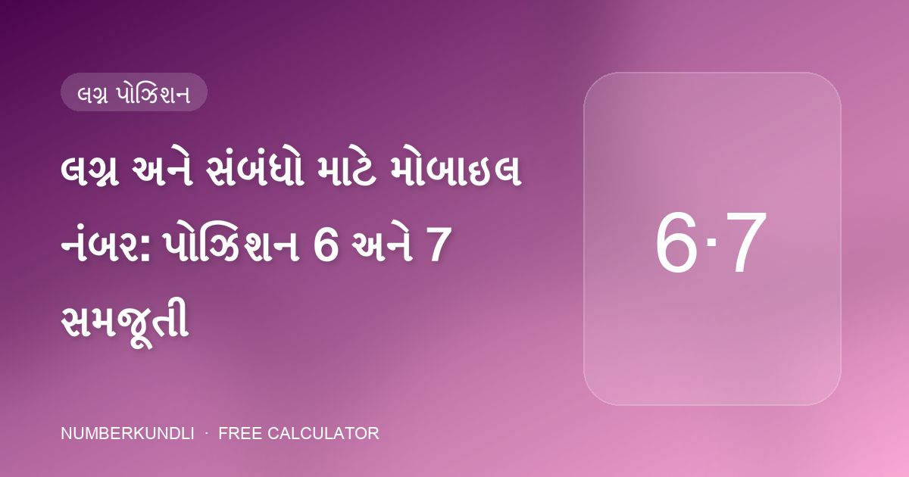
મોબાઇલ નંબર
લગ્ન અને સંબંધો માટે મોબાઇલ નંબર: પોઝિશન 6 અને 7 સમજૂતી
તમારા ફોન નંબરની વચ્ચેના બે અંક તમારા પ્રેમજીવનનું વર્ણન કરે છે. તેમાંનો એક મદદ કરી શકે; ઘણા નુકસાન કરી શકે.
એડવાન્સ મોબાઇલ ન્યુમરોલોજી ક્લાસમાંથી લીધેલી વ્યવહારુ માર્ગદર્શિકાઓ: તમારા ફોન નંબરનો દરેક અંક કેવી રીતે વાંચવો, શુભ પિન અને પાસવર્ડ કેવી રીતે પસંદ કરવો, અને જન્મતારીખ મુજબ વૉલપેપર, કવર અને રંગ કેવી રીતે મેળવવા.

તમારા ફોન નંબરની વચ્ચેના બે અંક તમારા પ્રેમજીવનનું વર્ણન કરે છે. તેમાંનો એક મદદ કરી શકે; ઘણા નુકસાન કરી શકે.
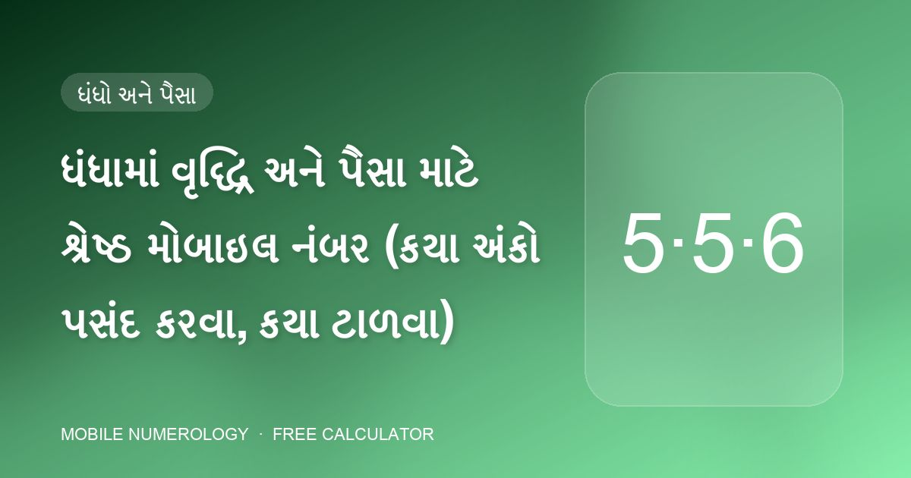
ધંધાકીય લાઇન માટે છેલ્લા ત્રણ અંક મોટાભાગનું કામ કરે છે. ત્યાં બરાબર શું મૂકવું — અને શું બહાર રાખવું તે અહીં છે.
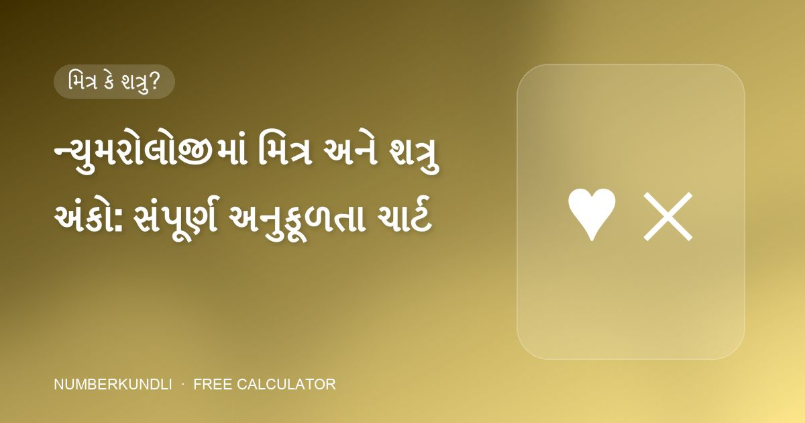
મોબાઇલ ન્યુમરોલોજીની દરેક ભલામણ એક પ્રશ્ન પર પાછી આવે છે: આ અંક તમારો મિત્ર છે, શત્રુ છે કે તટસ્થ?
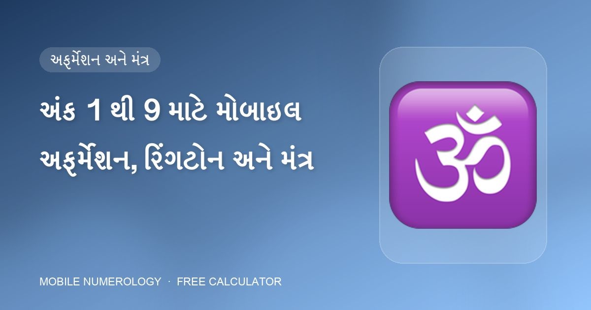
દરેક કૉલ એક નાની ઘટના છે. ક્લાસ દરેક અંકને બે અફર્મેશન, એક રિંગટોન શૈલી અને એક ગ્રહ મંત્ર સાથે જોડે છે જેથી માહોલ નક્કી થાય.
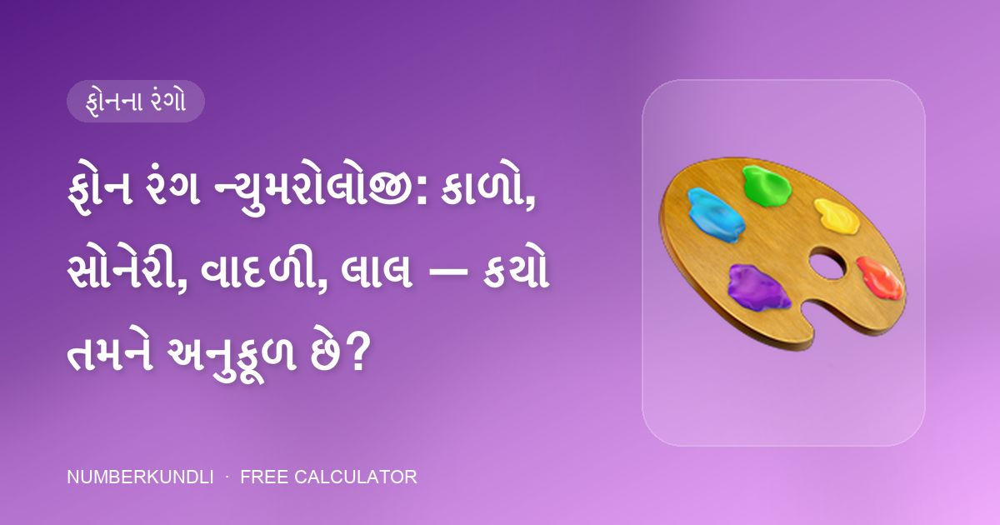
શિસ્ત માટે કાળો, સત્તા માટે સોનેરી, ધંધા માટે લીલો, અંતઃસ્ફુરણા માટે જાંબલી — તમારા ફોનનો રંગ એક ગ્રહની દૈનિક માત્રા છે.
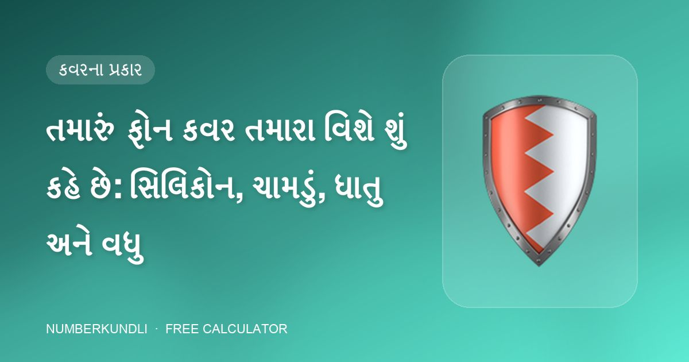
તમારા ફોનની સુરક્ષા માટે તમે પસંદ કરેલો કેસ ચૂપચાપ કહે છે કે તમે તમારી જાતને કેવી રીતે સુરક્ષિત રાખો છો. ન્યુમરોલોજી નવ કવર પ્રકારોને મૂળાંકો સાથે મેળવે છે.
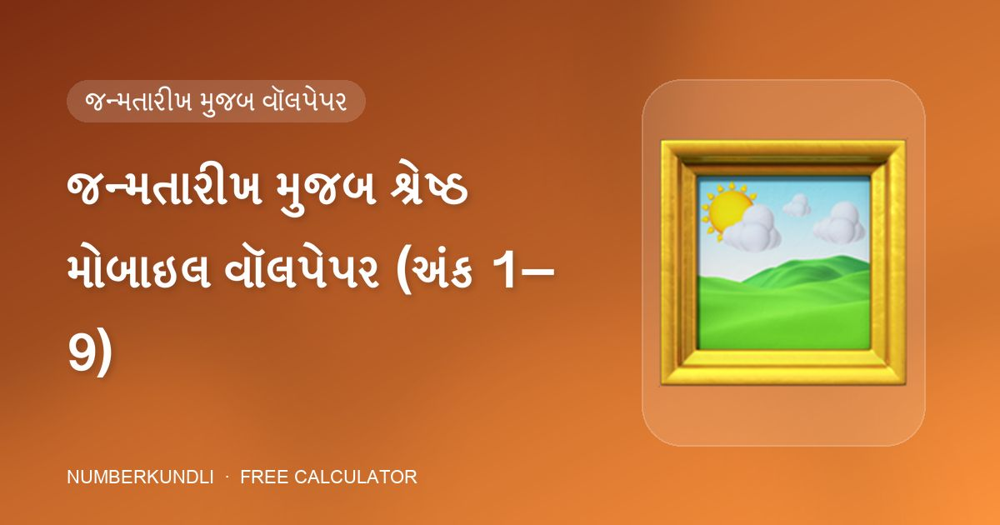
1 માટે ઊગતો સૂર્ય, 2 માટે પૂર્ણ ચંદ્ર, 6 માટે લક્ષ્મી, 9 માટે હનુમાન — દરેક અંકની એવી છબી છે જે તેના ગ્રહ સાથે મેળ ખાય છે.
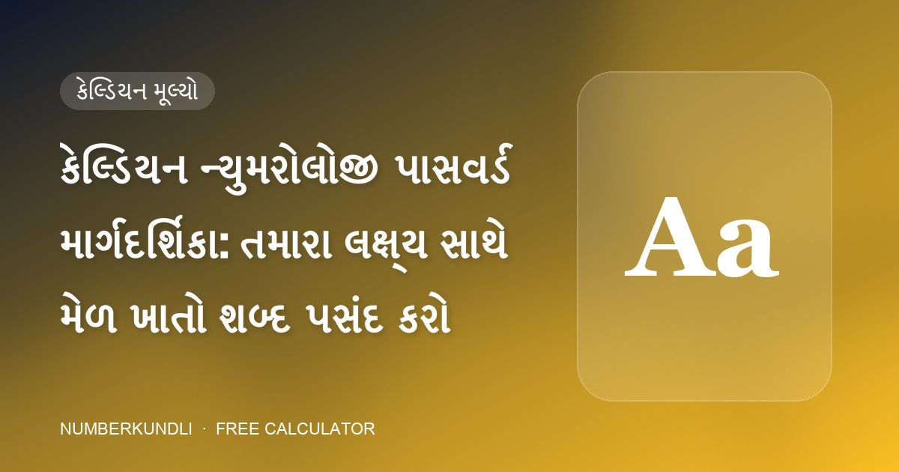
GANESHJI નો સરવાળો 6. LAXMI નો સરવાળો 5. કેલ્ડિયન ન્યુમરોલોજીમાં પાસવર્ડ એ અંદર એક અંક ધરાવતો શબ્દ છે — અને તે અંક હેતુપૂર્વક પસંદ કરી શકાય.
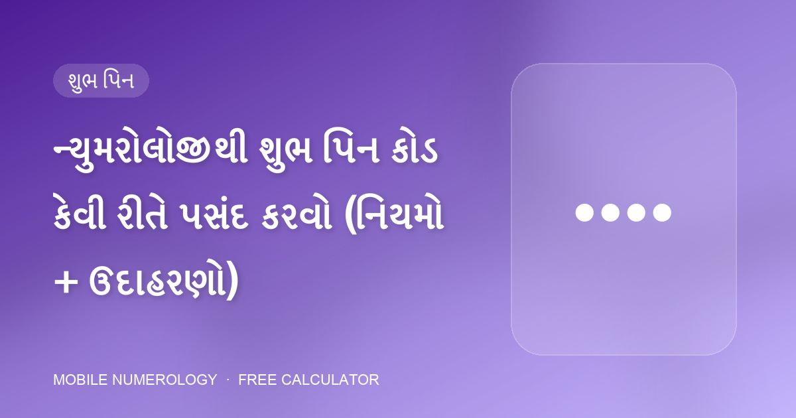
તમે દિવસમાં ડઝનેક વાર તમારો ફોન પિન ટાઇપ કરો છો. ન્યુમરોલોજી તેને નાની દૈનિક વિધિ માને છે — તેથી અંકો સમજી-વિચારીને પસંદ કરો.
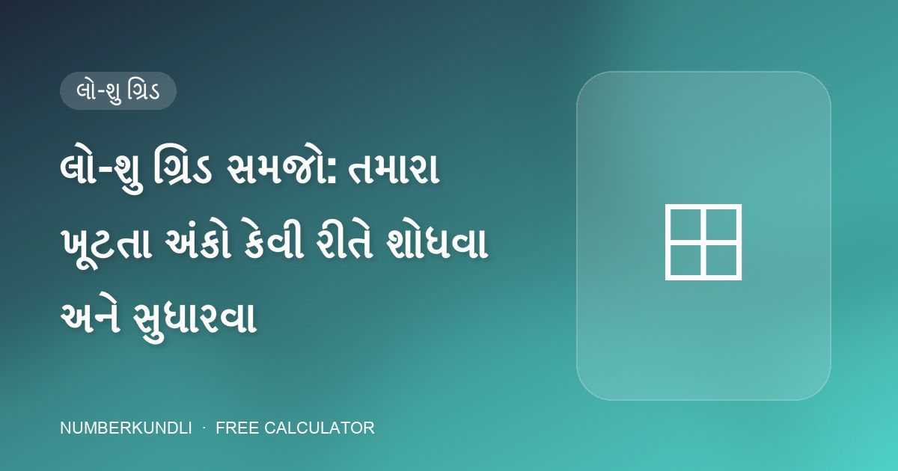
નવ ખાના, એક જન્મતારીખ. લો-શુ ગ્રિડ એક નજરે બતાવે છે કે તમે કઈ ઊર્જાઓ સાથે જન્મ્યા — અને કઈ ઉમેરવાની છે.
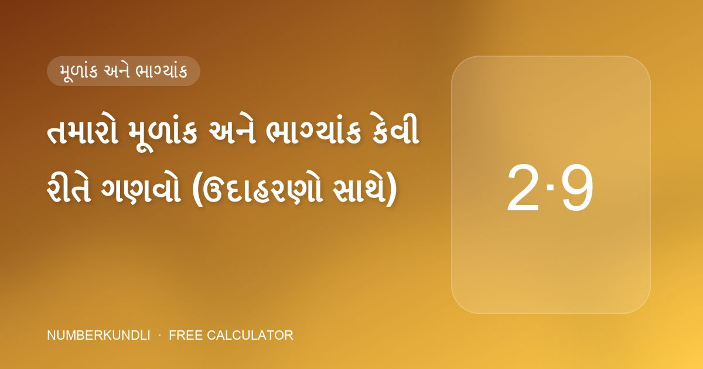
મોબાઇલ ન્યુમરોલોજીની દરેક ભલામણ બે અંકોથી ચાલે છે. બંને તમારી જન્મતારીખમાંથી આવે છે અને એક મિનિટથી ઓછા સમયમાં નીકળી આવે છે.
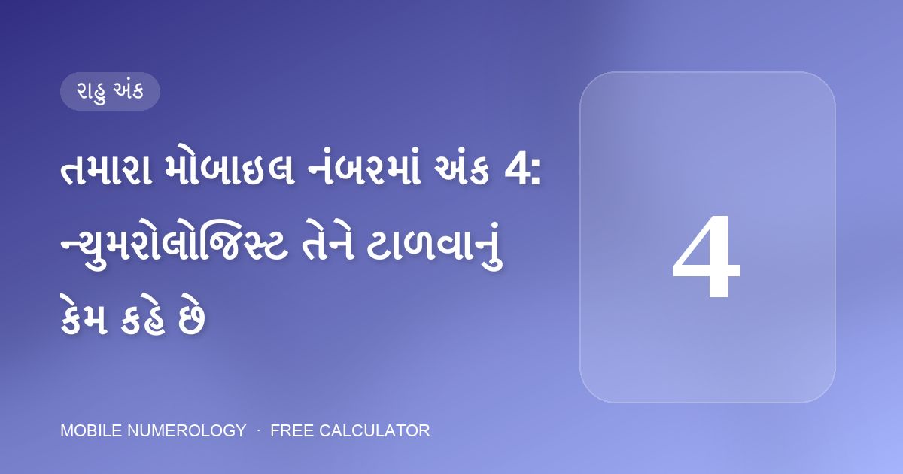
ક્લાસ સામગ્રી એક અંક વિશે અસામાન્ય રીતે સ્પષ્ટ છે: "મોબાઇલ ફોનમાં 4 અંક ટાળો." કારણ અહીં છે.
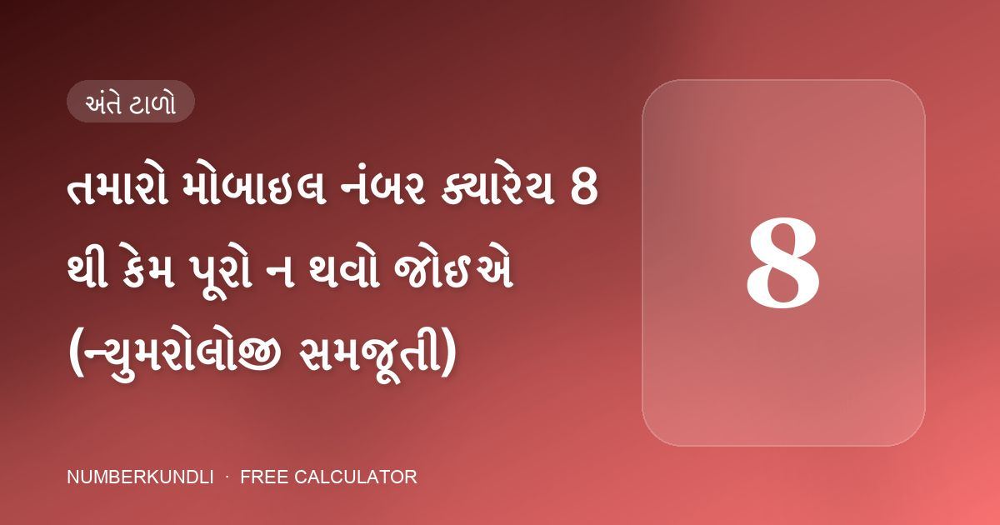
8 શનિનો અંક છે: કર્મ, મહેનત અને વિલંબ. ફોન નંબરની ખોટી પોઝિશનમાં તે પૈસા અને સંબંધો પર બોજ બની જાય છે.
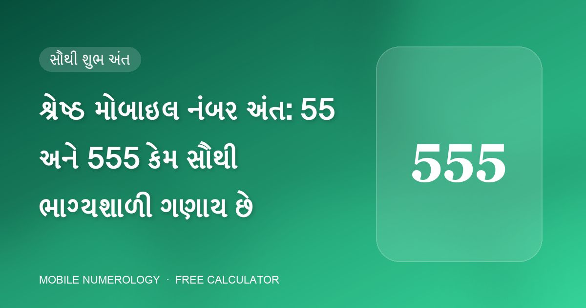
જો તમે તમારા ફોન નંબરના છેલ્લા અંકો પસંદ કરી શકો, તો ન્યુમરોલોજીની સ્પષ્ટ પસંદગી છે: 55 કે 555.
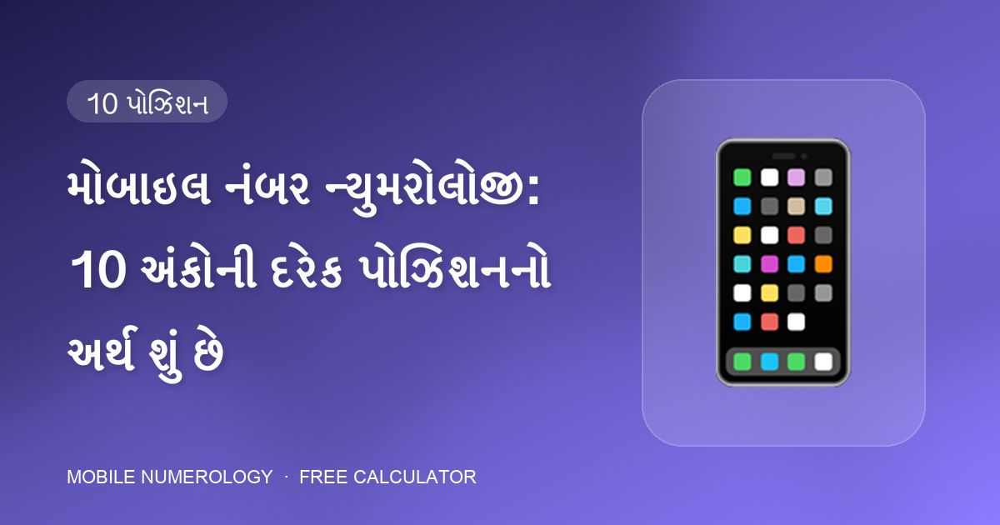
તમારો મોબાઇલ નંબર ફક્ત અંકોની શ્રેણી નથી. મોબાઇલ ન્યુમરોલોજીમાં દરેક પોઝિશન — પહેલા અંકથી છેલ્લા સુધી — જીવનના એક ચોક્કસ ક્ષેત્ર પર રાજ કરે છે.